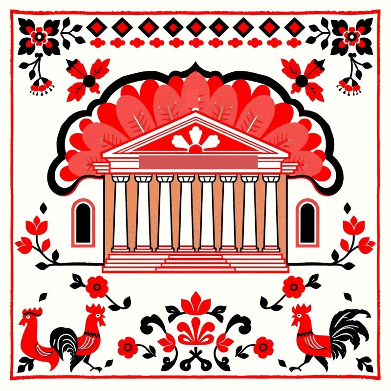
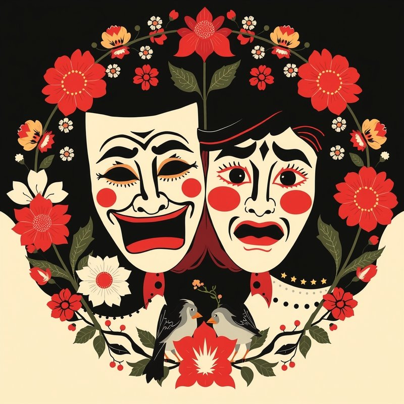
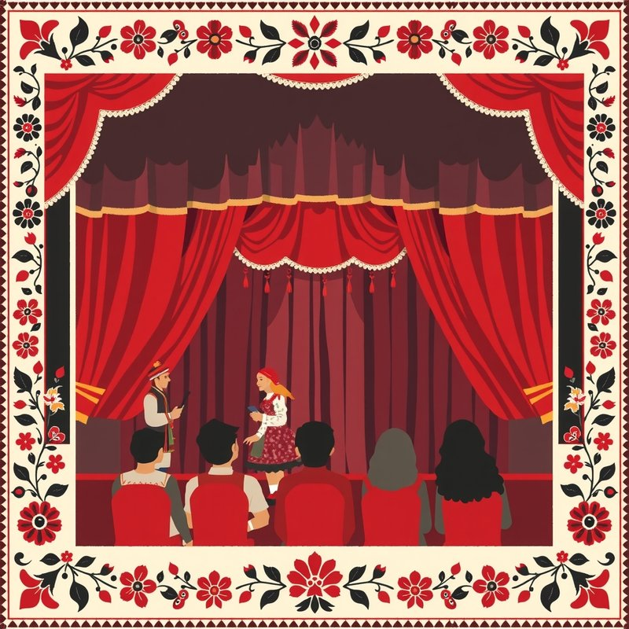
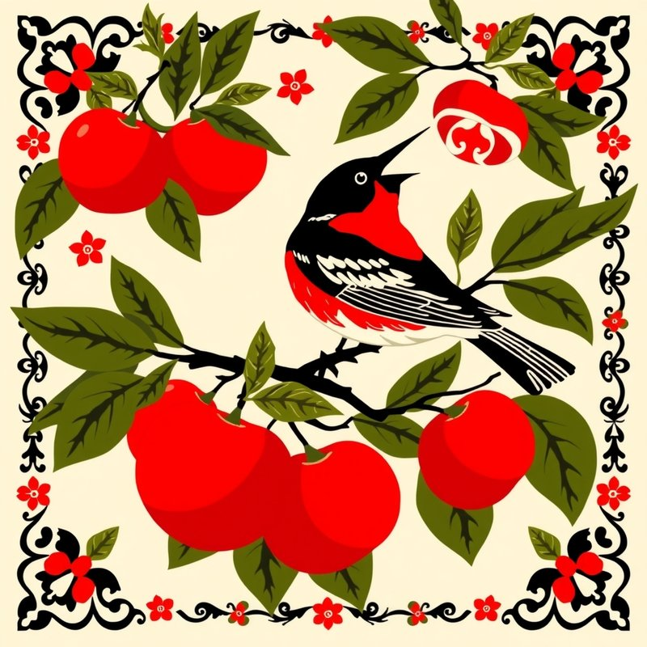
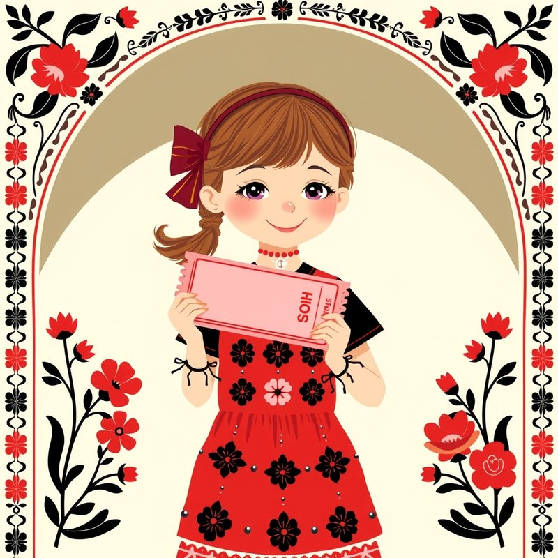
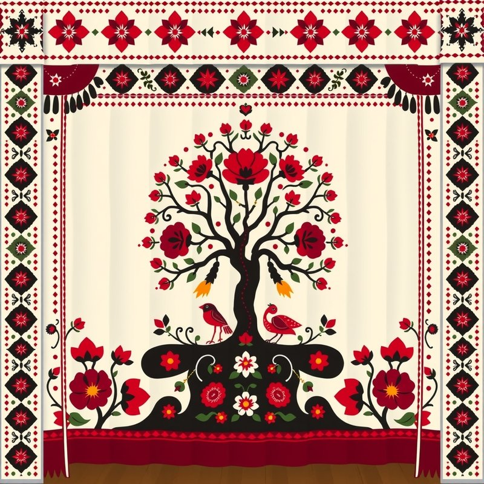

Красный, чёрный и белый, ромбы, восьмиконечные звёзды, «древо жизни», птицы — так украшали курские рушники и ковры. Мы описали нейросети наш объект — Курский драмтеатр им. А.С. Пушкина — и попросили нарисовать его в этом стиле.
Нейросеть: FLUX.1 [schnell] на платформе Cloudflare Workers AI. Текст запросов (промпты) составили мы, картинки отобрали и доработали.





